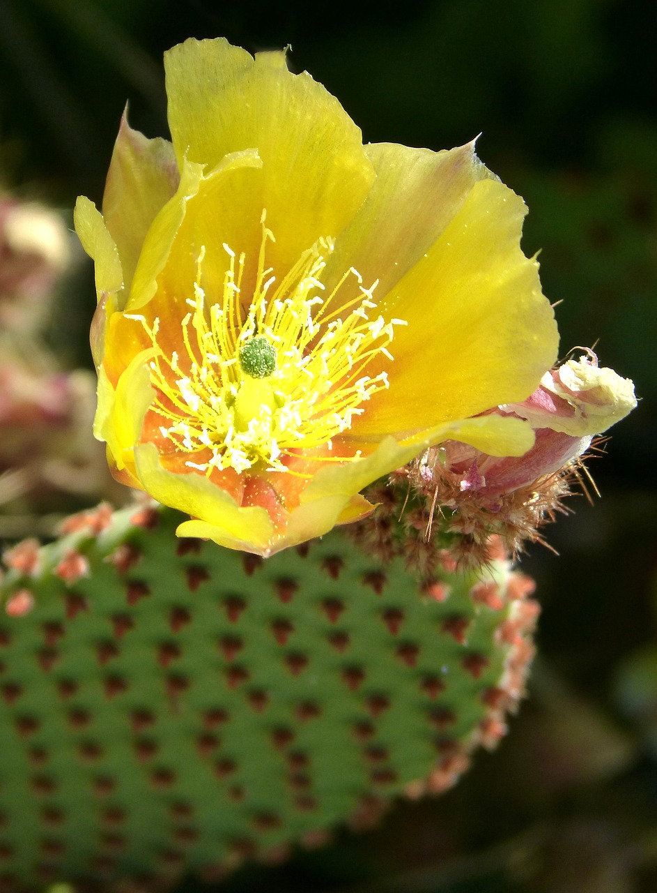

Par mums / About us
Latvijas Kaktusu un citu sukulentu biedrība vieno Latvijas kaktusu un sukulentu entuziastus. Biedrība organizē tikšanās, lekcijas un dārza izstādes, kurās dalībnieki var apmainīties ar pieredzi, stādiem un padomiem par šo aizraujošo augu audzēšanu un kolekcionēšanu. Pievienojies mums, lai kopīgi iepazītu un izjustu sukulentu daudzveidīgo un neparasto skaistumu!.
The Latvian Cactus and Other Succulents Society brings together enthusiasts of cacti and succulents from across Latvia. The society organizes meetings, lectures, and plant exhibitions where members can share their experience, plants, and advice on growing and collecting these fascinating plants. Join us to explore and appreciate the diverse and unique beauty of succulents together!
Kontakti / Contacts
Email: oksanalv@gmail.com
Email: cactus@inbox.lv
Telefons: +371 29489166
Botāniskais dārzs, Riga, Latvia
Kontaktinformācija:
Rekvizīti apmaksai / Payment details
Saņēmējs:
Reģ. Nr.: 4000xxxxxxx
Banka: Swedbank AS
IBAN: LVxxHABAxxxxxxxxxxxx
SWIFT: HABALV22

Nākamās tikšanās / Upcoming meetings
No 25. līdz 28. septembrim Latvijas Universitātes Botāniskajā dārzā norisināsies aizraujoša kaktusu un citu sukulentu izstāde, kurā būs apskatāmi Latvijas Kaktusu un citu sukulentu biedrības kolekcionāru eksotiskie augi. Šī ir unikāla iespēja iepazīt augus, kas pārsteidz ar savu pielāgošanās spēju un neparasto izskatu.
From September 25 to 28, an exciting exhibition of cacti and other succulents will take place at the Botanical Garden of the University of Latvia, featuring exotic plants from the collections of the Latvian Society of Cacti and Other Succulents. This is a unique opportunity to discover plants that amaze with their adaptability and unusual appearance.